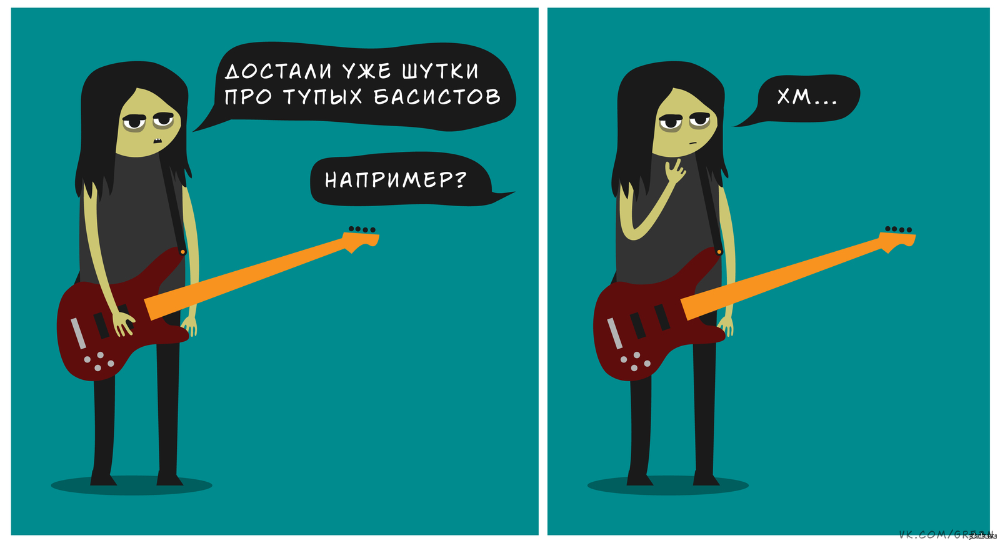
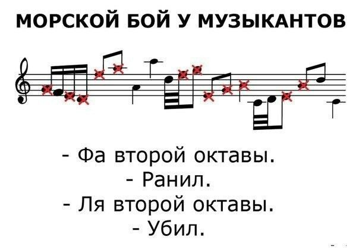

Шутки басистов
Простите, их не слышно.
Хорошая альтернатива спорту
Слишком худы для футбола? Да и рост подвел… Электрогитара — вот решение проблемы. Самооценка среднестатистического спортсмена — не говоря уже о коленях — рушится практически сразу после окончания школы. Гитаристам же повезло больше. Их ожидают годы концертов, джем-сессий и музыкальных открытий.
Победить своих кумиров
Как только вы одолеете “Eruption”, вам предстоит доказать, что вы играете быстрее Ингви, оригинальнее Хендрикса и спортивнее Ангуса. Вы уложите на лопатки всех тех, кем восхищались, и станете лучшим во всей гитарной вселенной! Удачи!
Расширить словарный запас
Вам придется выучить, что означают слова «мензура«, «бридж«, «жесткость струн», «стек», «шред» и «звукосниматель«. Употребление этих слов в разговоре с непосвященными может привести к конфликтам на почве непонимания, но общаясь с людьми с теми же интересами, вы заметите, что вас принимают как своего, и это чертовски приятно!